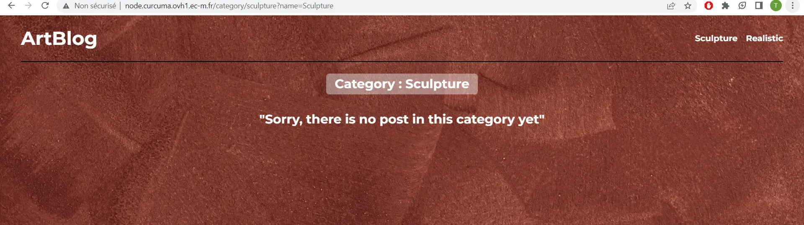
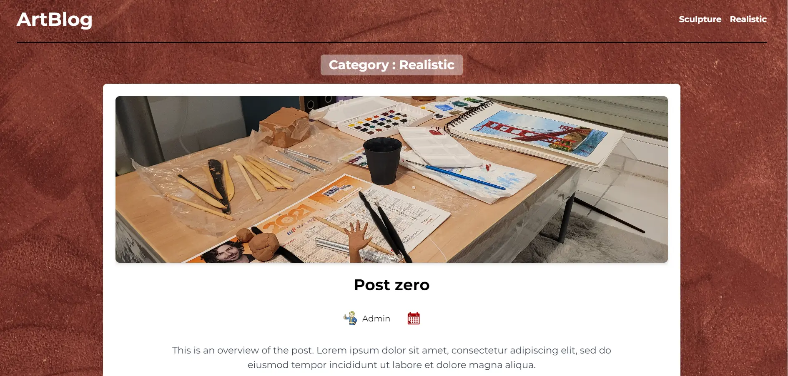
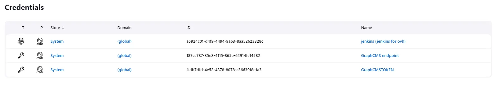

CI/CD : Déploiement et Integration continues
- POK
- 2022-2023
- temps 3
- CI/CD
- jenkins
- docker
- TDD
- nextjs
- react
- CMS
- Tuncay Bilgi
Dans ce POK, nous allons améliorer mon projet précédent : l'Artblog, en lui ajoutant de nouvelles pages et en créant un environnement d'intégration et de déploiement continue.
Niveau avancé
C'est un POK avancé car il met en relation plusieurs technologies différentes qu'il faut donc connaître, il demande de solides bases en :
- Linux et shell
- Développement web fullstack
- Docker
- Jenkins
- Programmation par les tests
Ce POK ce base sur plusieurs MON et POK qui ont précédés, voici la liste des projets dont j'ai eu besoin.
Ce POK ce base sur plusieurs MON et POK qui ont précédés, voici la liste des projets dont j'ai eu besoin.
- Le projet sur lequel ce POK se base : Artblog - Dev du Blog | Mise sur Site distant
- Le MON introduisant Docker
- Le Mon introduisant Jenkins
Enfin, voici le lien du repository GitHub où vous pourrez trouver tous le code.
Introduction :
Point de départ :
Le Artblog est un projet de blog que j'ai mené toute l'année scolaire. Voici un résumé de ce qui à été fait jusqu'ici :
- Développement du site en suivant un tuto YouTube.
- Déploiement du site sur le serveur ovh1 de Do-It.
- Conteneurisation du projet.
- Ajout d'un script de déploiement qui permet de mettre le site à jour en ligne automatiquement.
- Ajout d'une instance Jenkins pour, plus tard, automatiser la production.
Ce qu'il reste à faire :
Nous allons finir de mettre en place l'automatisation autour du projet. Le but final est d'avoir un site disponible sur internet. Quand un développeur ajoute une fonctionnalité ou corrige un bug, un serveur détecte automatiquement qu'il y des changements qui ne sont pas sur internet. A ce moment, il effectue une batterie de tests sur le code source, si les tests passent, le serveur déploie automatiquement la nouvelle version sur le net.
Techniquement cela veut dire qu'au premier sprint nous allons :
- Mettre en place Jest pour incorporer des tests dans l'application.
- Coder une nouvelle fonctionnalité en TDD.
Au second sprint :
- Mettre en place le script Jenkins.
- Tester l'intégration de bout en bout.
Réalisation des sprints :
La Todo des sprints était volontairement vague car le temps manque trop en fin d'année et il est bon de se concentrer sur l'essentiel des tâches et ajouter des détails si on a du temps en trop, ce qui n'a pas été mon cas. J'ai néanmoins pus atteindre mes objectifs fixés.
Le résultat est un blog qui fonctionne bien, quoiqu'avec parfois trop de latence. C'est surtout un site que l'on peut maintenir correctement et en équipe.
Premier Sprint :
Ajout de Jest :
On installe Jest pour pouvoir créer des tests unitaires :
npm install --save-dev jest
Jest est très pratique, il permet de lancer tous les tests contenues dans les fichiers présents dans le répertoire "tests"
La batterie de tests se lance avec npx jest, que l'on eut ajouter dans le config.json pour utiliser npm run test.
le fichier config.json ressemble alors à cela :
{"scripts": {
"test" : "npx jest",
"dev": "next dev",
"build": "next build",
"start": "next start -p 10438"
}}Ensuite on créer un dossier tests à la racine et on y créer le fichier "categoriepage.js" qui contiendra tous les tests liés à la fonctionnalité du site que l'on va ajouter.
Jest utilise des méthodes built-in pour tester pleins de choses différentes, allez voir la documentation sur internet pour savoir lesquelles utiliser.
Par défaut Jest utilise la syntaxe const a = require('./module') qui n'est pas compatible avec le reste du projet qui lui est en ES6 et donc utilise la syntaxe suivante import {a} from module
Pour pallier ce problème, on créer un fichier de configuration jest qui vient supplanté la configuration par défaut et qui demande à jest d'utiliser ES6 : config.jest
const nextJest = require("next/jest");
const createJestConfig = nextJest({
dir: "./",
});
const customJestConfig = {
moduleDirectories: ["node_modules", "<rootDir>/"],
};
module.exports = createJestConfig(customJestConfig);Nous voilà prêt pour la TDD!
TDD: Ajout d'une page dans mon site.
Je veux ajouter une série de pages dynamiques. On clique sur une catégorie de publication, cela nous redirige vers une page qui liste tous les posts possédant cette catégorie.
Pour ce faire, on commence par écrire les tests qui devront être validés par le code de la nouvelle fonctionnalité :
import { getCategories,getPostsByCat } from "../services"
test(
'CategoriesProps are fetched', async() =>{
const categories = await getCategories();
expect(categories).toContainEqual({name :'Sculpture',slug:'sculpture'})
}
)Ce test s'assure que les informations fetcher sont sous le bon format et qu'elle sont bien cohérentes.
Maintenant, il faut implémenter le code qui valide le test, ici il nous faut une fonction qui renvoie les données demander, c'est un fetch.:
- Implémentation minimale :
function getCategories() {
return {name :'Sculpture',slug:'sculpture'}
}Cette implémentation paraît débile, mais si vous coder en équipe, elle permet de valider le test ET de laisser à vous collègue la possibilité de coder le front en ayant une idée de la structure de données à laquelle le code doit s'attendre.
- Implémentation finale : C'est une requête graphQL il n'y à pas d’intérêt à la coller ici.
Après ça, on code le front, allez voir le premier POK ou des MON Reacts pour des tutos détaillés sur comment faire. Voici les résultats :
 Conclusion Premier sprint :
La partie facile de ce POK est terminée. Tout c'est bien passé, on pourrait continuer en :
- Implémentant des tests unitaires pour toutes les fonctionnalités du projet.
- Implémentant des tests de bout en bout.
- Implémentant des snapshots qui permettent de tester le front.
Mais je n'ai pas le temps pour ces options, on passe à la suite.
Second sprint :
Jenkins :
La mise en place de Jenkins dans un container peut être vu dans le MON sur Jenkins. Néanmoins, cette mise en place possède plusieurs problème :
- Jenkins ne possède même pas les librairies nécessaires pour faire tourner le projet.
- Jenkins ne possède pas les droits et les clés nécessaires pour faire quoi que ce soit.
- Il faut créer le script d'automatisation.
On y va dans l'ordre.
L'installation propre :
Jenkins à besoin de node, de git,de ssh etc... pour faire tourner le projet. Dans le MON Jenkins on avait créer un conteneur Jenkins en prenant simplement l'image officielle. Ici, nous allons utiliser l'image officielle alpine (basée sur Linux alpine) a laquelle j'ajoute node et tmux (je n'ai pas eu besoin de tmux).
Voici le dockerfile :
FROM jenkins/jenkins:lts-alpine-jdk11
USER root
RUN apk update && apk add nodejs npm
RUN apk add tmux
USER jenkins
et le docker-compose qui s'occupe des connexions :
version: '3'
services:
jenkins:
build: .
ports:
- "8080:8080"
- "50000:50000"
volumes:
- jenkins_home:/var/jenkins_home
environment:
JAVA_OPTS: "-Djenkins.install.runSetupWizard=false"
volumes:
jenkins_home:Grâce à cela on à un conteneur qui contient Jenkins et qui enregistre ces données entre deux lancements.
Les secrets :
Tous d'abord on donne à Jenkins, dans la partie manage credentials les clés nécessaires à faire fonctionner et à déployer le projet.
Je lui donne alors ma clé d'API et une clé ssh qui possède les accès au serveur ovh1, où je déploie le site (la mise en place de ce déploiement ce fait dans mon deuxième POK).
Ces informations, qu'on appelle à juste titre des secrets, sont hautement confidentielles. Il ne faut surtout pas les mettre sur serveur qui peuvent être compromis, c'est à dire tous les serveurs qui ne vous appartiennent pas et qui ont accès à internet. Ainsi il ne faut pas stocker vos clés ssh sur ovh1, ni sur github, au risque de vous la voir voler, et que quelqu'un achète des armes avec votre carte bleu au marché noir.
Jenkins est en local, si il est accédé par l'extérieur c'est que quelqu'un à déjà le contrôle sur votre pc. Aussi, les secrets qui y sont stockés sont cryptés, on peut donc y mettre de façon sûre la clé ssh privée qui va déployé sur ovh1, ainsi que les variables d'environnement de votre application. Je recommande cependant de créer une clé ssh uniquement pour Jenkins et de ne pas mettre la votre, si elle est compromise il suffira de bloquer les accès à cette unique clé.
Ne donnez pas non plus accès à ovh1 à votre repository github!
Ces secrets sont accessible depuis le Jenkinsfile grâce aux méthodes withcredentials() et on peut communiquer en ssh avec le ssh-agent, je vous invite à lire la doc Jenkins, même si elle est parfois lunaire.
- Résultats : 
Le jenkinsfile :
Le jenkinsfile est le fichier dont va se servir Jenkins pour executer votre Pipeline, voir le MON Jenkins si jamais vous ne l'avez pas encore fait. Je ne détaille pas le code, il est disponible sur le repository de mon projet sur Github.
Jenkins est une machine à gaz très capricieuse. Avec des milliers de plugins, et plus d'une dizaine année d’existence, il existe des millions de manières différentes de faire la même chose, et quand vous en choisissez une, ça ne marche pas. Évitez les interactions complexes entre Jenkins et d'autres site. Si vous voulez faire quelque chose qui existe utilisez ce qui existe déjà, et sinon bon courage.
Ici, on choisit la méthode suivante :
- Toutes les heures le job de Jenkins démarre.
- Jenkins possède une liste qui contient les hash des commits de mon projet.
- Il pull la dernière version du main du Github mon Projet.
- Il regarde le hash du dernier commit sur main.
- Si ce hash n'est pas dans la liste, cela veut dire que le projet n'est pas déployé, il réalises doc plusieurs tâches :
- Il lance 'npx jest' pour tester la dernière version du projet.
- Si les tests passent, il déploie le projet grâce à mon script qui date du POK d'avant sur ovh1 en se connectant par ssh.
- si le déploiement c'est déroulé sans encombre, il ajoute le hash du dernier commit dans sa liste.
- Si ce hash est déjà dans la liste, Jenkins ne fait rien, il n'y a rien besoin de faire.
On met en place tout ça et voici les résultat :
On peut voir, de gauche à droite, que Jenkins repère les différents commits, ensuite il execute la pipeline où il lance des tests et où il build et enfin, la pipeline est exécutée périodiquement.
Conclusions sprint 2 :
l’utilisation de jenkins n'est pas une chose aisée, et je vous épargne toutes les autres solutions que j'ai testé avant d'arriver à celle-ci qui est juste convenable. Cependant, une bonne partie de ceci serait plus simple si jenkins était un serveur ayant accès à un réseau, comme ça devrait être le cas normalement. J'ai pris le temps de réaliser l'essentiel de ce que je voulais, on pourrai aller plus loin en :
- Mettant en place une messagerie qui envoie un mail si la pipeline est cassée.
- Mettant en place une seconde pipeline qui s'occupe seulement de verifier que le site est disponible sur internet et qui le redéploie sinon, sans build (c'est possible facilement grâce à l'implémentation de mon script).
Conclusion POK 1,2 et 3 :
Ces trois POK m'ont permis de m'initier au développement web. J'ai commencé l'année en tant que débutant ne connaissant que html,css et bootstrap. Aujourd'hui, je suis capable de coder un site (simple) de bout en bout, j'ai des notions d'architecture système, j'ai connaissances de certaines best practices et surtout j'ai découvert le pan Dev-ops du développement web.
Finalement, j'ai une site fonctionnel qui m'a permis de beaucoup apprendre, les efforts en valaient la peine et je suis satisfait du résultat.